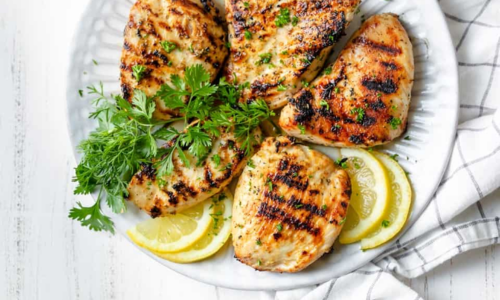

Grilled Lemon Herb Chicken
Ingredients
- 4 boneless, skinless chicken breasts
- 2 lemons (zested and juiced)
- 3 cloves garlic, minced
- 2 Tbsp olive oil
- 1 tsp dried oregano
- Salt and pepper to taste
Optional, for sides
- 1 lb Brussels sprouts
- 2 large sweet potatoes
- 2 Tbsp olive oil
- Salt and pepper to taste
Directions
- In a bowl, mix lemon zest, lemon juice, garlic, olive oil, oregano, salt, and pepper.
Marinate chicken breasts in the mixture for at least 30 minutes in the fridge.
- (If using the vegetables) Preheat oven to 400 F. Cut the brussel sprouts in half and the
sweet potatoes into wedges. Toss the veggies with olive oil, salt, and pepper before
spreading them on a baking sheet. Roast for 25-30 minutes, until tender and golden brown.
- Preheat grill to a medium-high heat. Grill chicken for 6-7 minutes on each side, or until
fully cooked.
- Serve, and enjoy!